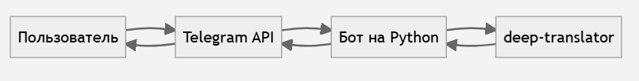
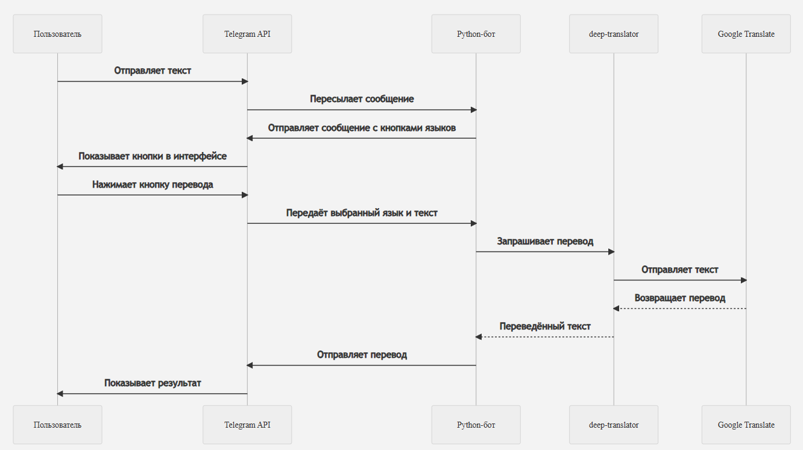
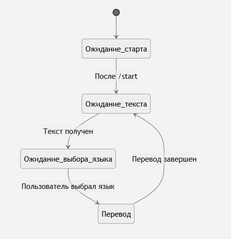

Документация вариативной части: Создание Telegram-бота для перевода текста на Python
Описание проекта
Bot_translator — это Telegram-бот, разработанный с использованием языка программирования Python, предназначенный для быстрого и удобного перевода текста между различными языками. Цель проекта — создать простой в использовании инструмент, позволяющий пользователю вводить текст, выбирать язык перевода с помощью кнопок, и мгновенно получать результат перевода прямо в мессенджере Telegram.
Проект реализован в рамках второй вариативной части проектной практики, где участники команды выбрали создание телеграм-бота как основную технологическую задачу.
Цель и задачи
Цель:
Создание Telegram-бота на Python, который предоставляет пользователю удобный интерфейс для перевода текста на различные языки с помощью интерактивных кнопок.
Задачи:
- Изучить Telegram Bot API, библиотеки pyTelegramBotAPI и deep-translator.
- Реализовать команду /start и приветственную кнопку.
- Настроить интерфейс с кнопками выбора языка.
- Обеспечить перевод текста с автоматическим определением исходного языка.
- Обработать пользовательские действия и корректно выводить результаты перевода.
Ход работы
- Изучены библиотеки pyTelegramBotAPI и deep-translator.
- Реализован обработчик команды /start и выведена приветственная кнопка "👋 Поздороваться".
- Настроен обработчик текстовых сообщений, предлагающий выбрать язык перевода.
- Добавлены интерактивные кнопки для выбора языка перевода.
- Для перевода используется GoogleTranslator с параметром source='auto' для автоматического определения исходного языка.
- При нажатии кнопки с выбранным языком, бот возвращает результат перевода.
Техническая реализация
- Язык разработки: Python 3.8+
- Библиотеки:
- pyTelegramBotAPI — для взаимодействия с Telegram Bot API
- deep-translator — для работы с Google Translate
- telebot.types — для создания кастомных кнопок и клавиатур
Архитектура проекта
Проект имеет модульную структуру:
- bot.py — основной исполняемый файл, содержащий всю бизнес-логику.
- GoogleTranslator из deep-translator — используется для выполнения перевода текста.
- Интерактивная клавиатура — реализована с помощью telebot.types, позволяет пользователю выбрать целевой язык перевода.
- Обработчики команд и сообщений — обеспечивают логику взаимодействия с пользователем.
Основной функционал
Команды и действия
- /start — запускает бота и отображает приветственную кнопку.
- Ввод текста пользователем — после ввода бот предлагает выбрать язык перевода.
- Интерактивные кнопки — для выбора целевого языка:
- Английский 🇬🇧 (en)
- Русский 🇷🇺 (ru)
Сценарий использования
- Пользователь запускает бота командой /start.
- Нажимает кнопку "👋 Поздороваться".
- Вводит фразу для перевода.
- Выбирает язык с помощью кнопок.
- Получает результат перевода в ответном сообщении.
Системные требования
- Python 3.8+
- Доступ к интернету
- Аккаунт Telegram
Визуализация
1. Схема взаимодействия компонентов
2. Взаимодействие пользователя с ботом-переводчиком через Telegram API
3. Диаграмма состояний
Модификация проекта
В обработчик текстовых сообщений были добавлены новые языки (немецкий, китайский).
Теперь бот умеет переводить на:
- Английский 🇬🇧
- Русский 🇷🇺
- Китайский 🇨🇳
- Немецкий 🇩🇪
Заключение
Проект Bot_translator является примером простой и функциональной реализации Telegram-бота на Python. Он наглядно демонстрирует возможности использования API мессенджеров и сторонних библиотек для создания практичных и интуитивно понятных инструментов. Благодаря использованию интерактивного интерфейса, бот обеспечивает удобный и быстрый процесс перевода текста между языками, что делает его полезным в повседневной коммуникации и обучении.